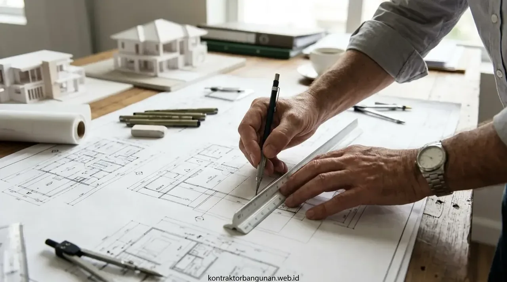

Mengapa Pemilihan Mitra Desain Arsitektur Menentukan 80% Keberhasilan Proyek?
Desain arsitektur bukan sekadar membuat gambar estetik, melainkan menyusun cetak biru presisi terkait alur sirkulasi, efisiensi material, dan keamanan struktur.
Banyak pemilik lahan menganggap biaya jasa arsitek sebagai pengeluaran ekstra yang membebani anggaran. Faktanya, gambar perencanaan yang matang justru menghemat biaya pembangunan secara drastis melalui penghitungan volume material yang akurat, pencegahan bongkar-pasang akibat salah ukur dinding, serta optimalisasi pencahayaan alami yang memangkas konsumsi listrik bulanan gedung hingga 20–30%.
Ketika membandingkan jasa arsitek freelance dengan biro arsitek resmi, pertanyaan intinya bukan semata-mata mencari yang termurah, melainkan menyesuaikan tingkat kompleksitas proyek Anda dengan kapasitas pertanggungjawaban teknis mitra perancang.
Mengenal Karakteristik, Kelebihan, dan Keterbatasan Jasa Arsitek Freelance
Arsitek freelance beroperasi secara mandiri dengan tarif kompetitif dan komunikasi santai, namun memiliki keterbatasan kapasitas waktu dan dukungan keahlian teknis struktur.
Bekerja sama dengan perancang lepas (freelancer) memiliki sejumlah kelebihan dan risiko yang perlu Anda cermati:
Kelebihan Freelance
- Tarif Terjangkau: Rp 50.000 – Rp 150.000 / m².
- Komunikasi Langsung: Tanpa perantara tim admin.
- Cocok untuk Skala Kecil: Renovasi interior 1 ruangan atau fasad 1 lantai.
Keterbatasan Freelance
- Single Point of Failure: Proyek mandek jika freelancer sakit/sibuk.
- Tanpa Ahli Sipil Terpadu: Ukuran besi beton kerap hanya perkiraan.
- Keterbatasan PBG: Jarang memiliki lisensi STRA aktif untuk SIMBG.
Mengenal Keunggulan, Sistem Kerja, dan Standar Biro Arsitek Resmi
Biro arsitek resmi beroperasi sebagai badan usaha dengan tim multidisiplin lengkap, kontrak hukum bergaransi, dan standar kontrol kualitas bertingkat.
Biro arsitek (architectural studio/consultancy) menawarkan solusi komprehensif bagi proyek-proyek yang mengutamakan kepastian hasil dan keselamatan struktur jangka panjang:
- Kolaborasi Tim Multidisiplin Terpadu: Satu proyek ditangani secara simultan oleh Principal Architect, Civil Structural Engineer, MEP Specialist, Interior Designer, dan Quantity Surveyor (QS).
- Legalitas Dokumen Terakreditasi Penuh: Gambar kerja dilengkapi stempel resmi arsitek ber-STRA dan sertifikasi SKK Sipil yang diakui 100% oleh Dinas Tata Ruang / PTSP seluruh Indonesia.
- Standar Dokumen Gambar Kerja Mendalam (50–100 Halaman): Berisi detail arsitektur hingga ukuran nat keramik, skema pembesian beton, diagram skematik pemipaan air panas-dingin, dan kalkulasi daya beban listrik.
- Kontrak Usaha Mengikat & Proteksi Konsumen: Hubungan kerja dilindungi perjanjian resmi yang memuat tenggat waktu penyerahan berkas, batasan revisi yang jelas, dan hak kepemilikan desain.

Sinkronisasi visualisasi 3D photorealistic dengan gambar kerja teknis arsitektur, struktur, dan mekanikal elektrikal.
Tabel Komparasi Head-to-Head: Arsitek Freelance vs Biro Arsitek
Perbandingan menyeluruh dari aspek biaya, kapasitas teknis, kecepatan revisi, dan jaminan legalitas pengurusan izin bangunan.
| Aspek Penilaian | Jasa Arsitek Freelance | Biro Arsitek Resmi / Terpadu |
|---|---|---|
| Bentuk Entitas Usaha | Perorangan / Independen | PT / CV Badan Usaha Jasa Konsultansi |
| Kisaran Tarif Desain | Rp 50.000 – Rp 150.000 / m² | Rp 150.000 – Rp 450.000 / m² |
| Komposisi Tim Kerja | 1 orang perancang mandiri | Tim multidisiplin (Arsitek, Sipil, MEP, QS) |
| Kalkulasi Struktur Tahan Gempa | Jarang dihitung (standar empiris) | Wajib software engineering (SAP2000 / ETABS) |
| Legalitas Sertifikasi STRA / SKK | Opsional (sering belum teregistrasi) | Memiliki STRA & SKK Aktif Terverifikasi LPJK |
| Kelengkapan Dokumen DED | 10 – 25 lembar gambar standar | 50 – 100 lembar detail spesifikasi teknis siap tender |
| Penyusunan Rincian RAB | Estimasi global per meter | Bill of Quantities (BoQ) rinci berbasis AHS PUPR |
| Validitas Pengurusan PBG / SLF | Sering butuh pihak ketiga untuk tanda tangan | Gambar langsung siap upload ke sistem SIMBG |
| Kapasitas Penanganan Revisi | Rentan lambat jika freelancer ada kesibukan | Terjadwal rapi dengan tim drafter pendukung |
| Garansi & Tanggung Jawab Hukum | Kesepakatan lisan / informal | Terikat surat kontrak resmi berkekuatan hukum |
- Uji Portofolio: Mintalah contoh lembar DED (Detail Engineering Design) proyek nyata yang pernah mereka buat, bukan hanya render 3D estetik.
- Cek Nomor STRA: Verifikasi nomor registrasi arsitek perancang Anda di portal resmi Dewan Arsitek Indonesia (DAI).
- Klausul Revisi: Pastikan batas jumlah putaran revisi denah dan fasad disepakati jelas sebelum kontrak ditandatangani.
Perbedaan Kelengkapan Gambar Kerja (DED) dan Validitas Pengurusan PBG
Gambar kerja biro arsitek memuat lembar rekayasa struktur dan utilitas tersertifikasi yang memenuhi syarat kelayakan uji teknis SIMBG.
Banyak konsumen tergiur paket gambar murah dari internet, namun akhirnya kecewa karena berkas tersebut ditolak mentah-mentah saat diunggah ke portal SIMBG. Pemerintah melalui Permen PUPR No. 16 Tahun 2021 mewajibkan:
- Lembar Gambar Struktur: Detail penulangan pondasi cakar ayam, kolom portal utama, balok sloof, pelat lantai beton, dan kuda-kuda atap yang ditandatangani oleh pemegang SKK Jenjang 7/8/9 Bidang Rekayasa Sipil.
- Lembar Gambar MEP: Jalur pipa air bersih, pipa air buangan kotor/bekas, sumur resapan, tangki septik biofilter, dan diagram panel MCB listrik yang ditandatangani oleh ahli teknik utilitas.
- Dokumen Spesifikasi Teknis (RKS): Petunjuk mutu beton, metode pengujian slump, dan standar keselamatan kebakaran.
Kapan Anda Harus Memilih Freelance dan Kapan Wajib Menggunakan Biro Arsitek?
Gunakan arsitek freelance untuk renovasi estetika ringan tanpa perubahan struktur, dan pilihlah biro arsitek untuk pembangunan rumah baru 2+ lantai atau bangunan komersial.
Panduan keputusan praktis:
- Pilih Jasa Arsitek Freelance Jika:
- Anda hanya ingin mendesain ulang fasad rumah 1 lantai tanpa membongkar kolom beton utama.
- Anda butuh penataan interior 1–2 ruangan (seperti renovasi kamar tidur atau dapur kecil).
- Anda memiliki anggaran desain sangat terbatas dan tidak memerlukan pengurusan PBG/SLF baru.
- Pilih Biro Arsitek Resmi / Layanan Terpadu Jika:
- Anda membangun rumah baru 2 lantai, 3 lantai, atau hunian mewah di tanah berkontur miring.
- Proyek Anda merupakan bangunan publik/komersial (ruko, kafe, kantor, kos-kosan, gudang).
- Anda membutuhkan dokumen RAB yang sangat presisi untuk mengajukan kredit konstruksi bank (KPR Konstruksi).
- Anda menginginkan kepastian bahwa gambar desain 100% bisa dibangun (buildable) tanpa kompromi keselamatan.
Keuntungan Paket Desain Terintegrasi Konstruksi Bersama Kontraktor Bangunan
Kontraktor Bangunan menyatukan keahlian studio arsitektur perancang dan kekuatan tim pelaksana konstruksi dalam satu paket hemat biaya.
Mengapa memilih layanan rancang-bangun (Design & Build) kami?
- Gratis Biaya Desain Arsitektur: Biaya perancangan 3D, DED lengkap, dan RAB akan dikompensasikan 100% (gratis) jika proyek konstruksi dieksekusi bersama kami.
- Desain 100% Realistis Sesuai Anggaran: Arsitek kami merancang sesuai alokasi dana riil Anda (design to budget), mencegah gambar impian yang mustahil dibangun karena kekurangan biaya.
- Asistensi Legalitas PBG Tanpa Ribet: Tim kami membantu seluruh proses verifikasi administrasi dan teknis hingga dokumen PBG resmi Anda terbit dari dinas perizinan.
- Garansi Struktur Resmi: Tanggung jawab desain dan kualitas konstruksi berada di satu pintu, menghapus aksi saling lempar kesalahan antara arsitek perancang dan kontraktor pelaksana.
Pertanyaan yang Sering Diajukan (FAQ)
Kesimpulan Praktis
Memilih antara jasa arsitek freelance vs biro arsitek pada akhirnya kembali pada skala proyek, tingkat risiko struktur, dan kebutuhan legalitas bangunan Anda. Untuk investasi properti bernilai ratusan juta hingga miliaran rupiah, memilih biro arsitek profesional atau layanan rancang-bangun terpadu merupakan keputusan paling cerdas guna melindungi aset keluarga Anda dari kegagalan konstruksi.
Konsultasikan rencana denah, konsep fasad 3D, dan perhitungan RAB bangunan Anda secara gratis bersama tim arsitek Kontraktor Bangunan sekarang juga.